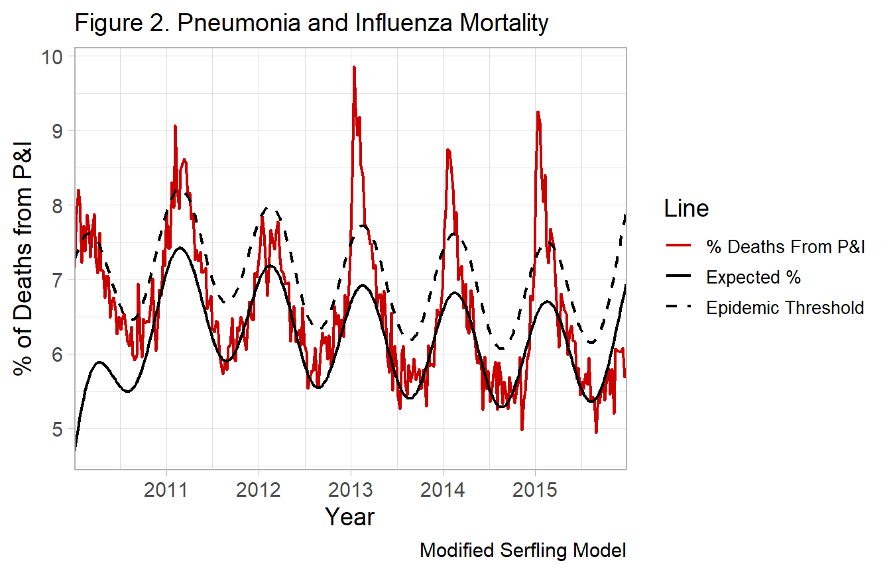

Modified Serfling Models
Kevin W. McConeghy
2019-06-06
Source:vignettes/05-modserf.Rmd
05-modserf.RmdModern Applications of Serfling Models
The cyclical regression model published by Serfling [@Serlfing1963] is not commonly implemented in its original form.
Virology data
In current methods, most researchers incorporate data on the percent of isolates positive with influenza viral types. This is publically available in many cases, see ?nrevss. The data describes the proportion of isolates tested, which may be obtained from participating hospital and outpatient settings. Using this surrogate time-periods of low flu activity can be used to construct a counterfactual for what the rate of the reported influenza outcome would be in the absence of high influenza activity. Whereas the original model relied on “off-season” data and the Fourier term, virology data gives you a more direct measure. This ultimately provides increased confidence that deaths are influenza related and estimated influenza morbidity and mortality.
The example dataset for this package, flumodelr::fludta is a combination of the CDC-122 cities dataset, ?cdc122city and the public virology data ?nrevss. The virology is matched by week, with a lag of 2 weeks to allow for reporting of deaths (i.e. Virology(week_t-2)=Mortality(week_t)).
#> Warning: Removed 52 rows containing missing values (geom_path).
The original model can be modified like so:
\[Eq \ 1. \ y = \alpha_0 + \beta_1*t + \beta_2*Flu_t + sin(\frac{2 \pi t}{period}) + cos(\frac{2 \pi t}{period}) + u\] Where Flu = no. of isolates positive for influenza / total isolates tested in a given timepoint t. period is a fixed parameter equal to the cycle of the time unit (e.g. 52 weeks in a year).
Many published examples of this exist [@Wang2012, @Matias2016]. Some authors include data on the % RSV (+), as well as breakdown influenza by subtype and even include data on weather, humidity etc. Including individual terms for each viral subtype may have advantages as certain types of influenza are associated with more severe outcomes such as hospitalization and death.
flum()
A general wrapper, flum(), for modeling time-series data is written for this purpose. This will compute a traditional serfling model or other generalized linear models, a smoothed model (adds polynomial terms), a model which allows for virology data, and other options explored below.
Influenza data
head(df_cdc)
#> # A tibble: 6 x 10
#> year week fludeaths alldeaths perc_fludeaths yrweek_dt fluyr
#> <int> <int> <int> <int> <dbl> <date> <int>
#> 1 2010 1 960 13423 7.15 2010-01-03 2009
#> 2 2010 2 1026 13019 7.88 2010-01-10 2009
#> 3 2010 3 988 12046 8.20 2010-01-17 2009
#> 4 2010 4 1002 12466 8.04 2010-01-24 2009
#> # ... with 2 more rows, and 3 more variables: prop_flupos <dbl>,
#> # week_in_order <int>, epi <lgl>
General Estimation Procedure (performed by flum())
add Fourier term
df_cdc_2 <- df_cdc %>%
mutate(t = row_number(), #set origin to october
theta = 2*t / 52,
sin_2 = sinpi(theta),
cos_2 = cospi(theta))See Serfling model background for discussion on Fourier terms and cyclical regression.
Estimate coefficients for baseline model
base_fit <- df_cdc_2 %>%
lm(perc_fludeaths ~ t + week_2 + week_3 + week_4 + week_5 +
prop_flupos + sin_2 + cos_2, data=., na.action = na.exclude)
summary(base_fit)
#>
#> Call:
#> lm(formula = perc_fludeaths ~ t + week_2 + week_3 + week_4 +
#> week_5 + prop_flupos + sin_2 + cos_2, data = ., na.action = na.exclude)
#>
#> Residuals:
#> Min 1Q Median 3Q Max
#> -1.04829 -0.28733 -0.00103 0.24632 1.86589
#>
#> Coefficients:
#> Estimate Std. Error t value Pr(>|t|)
#> (Intercept) 4.129e+00 1.547e+00 2.668 0.00812 **
#> t 1.041e-01 6.086e-02 1.711 0.08837 .
#> week_2 -1.500e-03 8.702e-04 -1.724 0.08598 .
#> week_3 9.490e-06 5.723e-06 1.658 0.09849 .
#> week_4 -2.802e-08 1.756e-08 -1.596 0.11175
#> week_5 3.150e-11 2.034e-11 1.549 0.12264
#> prop_flupos 3.437e+00 4.632e-01 7.420 1.79e-12 ***
#> sin_2 6.168e-01 5.853e-02 10.537 < 2e-16 ***
#> cos_2 3.955e-01 5.299e-02 7.464 1.36e-12 ***
#> ---
#> Signif. codes: 0 '***' 0.001 '**' 0.01 '*' 0.05 '.' 0.1 ' ' 1
#>
#> Residual standard error: 0.4679 on 252 degrees of freedom
#> (52 observations deleted due to missingness)
#> Multiple R-squared: 0.777, Adjusted R-squared: 0.7699
#> F-statistic: 109.7 on 8 and 252 DF, p-value: < 2.2e-16Predict outcome values, assuming no influenza activity
Here we predict the outcome for each observation, given the fitted model base_fit above. We tell R to compute 95% prediction intervals. This is conventional for most modern approaches, see [insert cites]. The original Serfling paper estimated a threshold 1.64 standard deviations above the trend line.
base_pred <- df_cdc_2 %>%
mutate(prop_flupos = 0) %>% #Note setting to zero
predict(base_fit, newdata=., se.fit=TRUE,
interval="prediction", level=0.90)Critically, before predicting observations, we set the measure of our influenza activity, prop_flupos to zero. This is to estimate the influenza activity at each timepoint, assuming that the proportion of influenza isolates was equal to zero.
Add fitted values to dataset
fludta_fitted <- df_cdc_2 %>%
add_column(., y0=base_pred$fit[,1], y0_ul=base_pred$fit[,3])
head(fludta_fitted)
#> # A tibble: 6 x 20
#> year week fludeaths alldeaths perc_fludeaths yrweek_dt fluyr
#> <int> <int> <int> <int> <dbl> <date> <int>
#> 1 2010 1 960 13423 7.15 2010-01-03 2009
#> 2 2010 2 1026 13019 7.88 2010-01-10 2009
#> 3 2010 3 988 12046 8.20 2010-01-17 2009
#> 4 2010 4 1002 12466 8.04 2010-01-24 2009
#> # ... with 2 more rows, and 13 more variables: prop_flupos <dbl>,
#> # week_in_order <int>, epi <lgl>, t <int>, theta <dbl>, sin_2 <dbl>,
#> # cos_2 <dbl>, week_2 <dbl>, week_3 <dbl>, week_4 <dbl>, week_5 <dbl>,
#> # y0 <dbl>, y0_ul <dbl>% of Deaths from P&I - No. of influenza / pneumonia deaths per 100,000 people.
"Expected % - A fit of the cyclical regression model, (one Fourier term).
Epidemic Threshold - 90% Upper Prediction Interval (1.64 SD)
This model differs from the original Serfling regressions because of it’s use of influenza virology to generate a counterfactual vs. using an off-season secular trend.
Compute attributable mortality
Excess mortality
You can either report the deaths in excess of the one-sided 95% prediction interval, which are sometimes described as epidemics or severe periods of influenza morbidity and mortality.
df_excess <- fludiff(fludta_fitted, obsvar=perc_fludeaths, fitvar=y0_ul)
df_excess %>%
head(.)
#> # A tibble: 6 x 21
#> year week fludeaths alldeaths perc_fludeaths yrweek_dt fluyr
#> <int> <int> <int> <int> <dbl> <date> <int>
#> 1 2010 1 960 13423 7.15 2010-01-03 2009
#> 2 2010 2 1026 13019 7.88 2010-01-10 2009
#> 3 2010 3 988 12046 8.20 2010-01-17 2009
#> 4 2010 4 1002 12466 8.04 2010-01-24 2009
#> # ... with 2 more rows, and 14 more variables: prop_flupos <dbl>,
#> # week_in_order <int>, epi <lgl>, t <int>, theta <dbl>, sin_2 <dbl>,
#> # cos_2 <dbl>, week_2 <dbl>, week_3 <dbl>, week_4 <dbl>, week_5 <dbl>,
#> # y0 <dbl>, y0_ul <dbl>, y_diff <dbl>
Attributable influenza mortality
Alternatively, you can simply take the excess deaths above the predicted line and report these as deaths attributable to influenza. Since they are in excess of the predicted deaths in the absence of influenza (i.e. no influenza positive isolates).
df_excess <- fludiff(fludta_fitted, obsvar=perc_fludeaths, fitvar=y0)
df_excess %>%
head(.)
#> # A tibble: 6 x 21
#> year week fludeaths alldeaths perc_fludeaths yrweek_dt fluyr
#> <int> <int> <int> <int> <dbl> <date> <int>
#> 1 2010 1 960 13423 7.15 2010-01-03 2009
#> 2 2010 2 1026 13019 7.88 2010-01-10 2009
#> 3 2010 3 988 12046 8.20 2010-01-17 2009
#> 4 2010 4 1002 12466 8.04 2010-01-24 2009
#> # ... with 2 more rows, and 14 more variables: prop_flupos <dbl>,
#> # week_in_order <int>, epi <lgl>, t <int>, theta <dbl>, sin_2 <dbl>,
#> # cos_2 <dbl>, week_2 <dbl>, week_3 <dbl>, week_4 <dbl>, week_5 <dbl>,
#> # y0 <dbl>, y0_ul <dbl>, y_diff <dbl>
Examples with flum()
Incidence-Rate Difference (Simplest model)
fludta_mod <- flum(df_cdc_2, model="ird",
outc=perc_fludeaths, time=yrweek_dt,
viral=prop_flupos)
head(fludta_mod)
#> # A tibble: 6 x 21
#> year week fludeaths alldeaths perc_fludeaths yrweek_dt fluyr
#> <int> <int> <int> <int> <dbl> <date> <int>
#> 1 2010 1 960 13423 7.15 2010-01-03 2009
#> 2 2010 2 1026 13019 7.88 2010-01-10 2009
#> 3 2010 3 988 12046 8.20 2010-01-17 2009
#> 4 2010 4 1002 12466 8.04 2010-01-24 2009
#> # ... with 2 more rows, and 14 more variables: prop_flupos <dbl>,
#> # week_in_order <int>, epi <lgl>, t <int>, theta <dbl>, sin_2 <dbl>,
#> # cos_2 <dbl>, week_2 <dbl>, week_3 <dbl>, week_4 <dbl>, week_5 <dbl>,
#> # season <dbl>, high[,"prop_flupos"] <lgl>, fluseason <lgl>original serfling model
fludta_mod <- flum(df_cdc_2, model="fluserf",
outc=perc_fludeaths, time=yrweek_dt)
fludta_mod %>%
select(year, week, perc_fludeaths, y0, y0_ul) %>%
head()
#> # A tibble: 6 x 5
#> year week perc_fludeaths y0 y0_ul
#> <int> <int> <dbl> <dbl> <dbl>
#> 1 2010 1 7.15 7.36 7.84
#> 2 2010 2 7.88 7.41 7.90
#> 3 2010 3 8.20 7.45 7.95
#> 4 2010 4 8.04 7.49 8.00
#> # ... with 2 more rowsVirology-based model
You can specify virology data using viral option, which accepts a string vector of length any. The function will search for named columns in the data using that string and build a model formula which includes them.
Any viral data called here should be a proportional value, i.e. float between 0-1.
Other options
If excluding the polynomial terms is desired:
## Without polynomial terms
flum(df_cdc_2, model="fluglm",
outc=fludeaths, time=week_in_order,
viral = "prop_flupos", poly=F)
#> # A tibble: 313 x 6
#> flu_pred flu_pred_upr flu_pred_lwr flu_base flu_base_upr flu_base_lwr
#> <dbl> <dbl> <dbl> <dbl> <dbl> <dbl>
#> 1 NA NA NA 799. 839. 759.
#> 2 NA NA NA 809. 850. 769.
#> 3 NA NA NA 818. 859. 776.
#> 4 NA NA NA 825. 867. 783.
#> # ... with 309 more rowsPerform a seasonal baseline model using Sept - May as season-period.
## Epidemic period, non-specified
flum(df_cdc_2, model="fluglm",
outc=fludeaths, time=t,
season=T)
#> Warning in predict.lm(object, newdata, se.fit, scale = residual.scale, type
#> = if (type == : prediction from a rank-deficient fit may be misleading
#> # A tibble: 313 x 6
#> flu_pred flu_pred_upr flu_pred_lwr flu_base flu_base_upr flu_base_lwr
#> <dbl> <dbl> <dbl> <dbl> <dbl> <dbl>
#> 1 885. 944. 826. 10572. NaN NaN
#> 2 900. 955. 844. 6714. NaN NaN
#> 3 912. 965. 860. 4003. NaN NaN
#> 4 923. 972. 874. 2258. NaN NaN
#> # ... with 309 more rowsIdentify your own epidemic period, then call flum() to use it. Season is default NULL, but if a named variable in fludta_mod, the model will search for and use it as the baseline.
## Epidemic period specified
fludta_mod <- ird(data=df_cdc_2,
outc = perc_fludeaths, viral=prop_flupos, time=t)
flum(data=fludta_mod, model="fluglm", outc=fludeaths, time=t,
season=high) %>%
head(.)
#> # A tibble: 6 x 6
#> flu_pred flu_pred_upr flu_pred_lwr flu_base flu_base_upr flu_base_lwr
#> <dbl> <dbl> <dbl> <dbl> <dbl> <dbl>
#> 1 885. 944. 826. 800. 1144. 456.
#> 2 900. 955. 844. 811. 1141. 481.
#> 3 912. 965. 860. 820. 1137. 504.
#> 4 923. 972. 874. 829. 1133. 525.
#> # ... with 2 more rowsYou can pass arguments to the glm() call, like specifying a Poisson model.
## Poisson model with offset term
flum(df_cdc_2,
model="fluglm", outc = fludeaths,
time = t, season=T,
family=poisson, offset=log(alldeaths)) %>%
head(.)
#> Warning in predict.lm(object, newdata, se.fit, scale = residual.scale, type
#> = if (type == : prediction from a rank-deficient fit may be misleading
#> # A tibble: 6 x 6
#> flu_pred flu_pred_upr flu_pred_lwr flu_base flu_base_upr flu_base_lwr
#> <dbl> <dbl> <dbl> <dbl> <dbl> <dbl>
#> 1 983. 1002. 965. 6220596. 239874786810. 161.
#> 2 969. 986. 952. 185769. 105602520. 327.
#> 3 910. 925. 895. 15012. 446363. 505.
#> 4 953. 968. 938. 3259. 14674. 724.
#> # ... with 2 more rowsA negative binomial model can be called from the MASS::glm.nb function using glmnb=T option. The output is the same.
## Negative binomial model with offset term
flum(df_cdc_2,
model="fluglm", outc = fludeaths,
time = t, viral='prop_flupos',
glmnb = T) %>%
head(.)
#> # A tibble: 6 x 6
#> flu_pred flu_pred_upr flu_pred_lwr flu_base flu_base_upr flu_base_lwr
#> <dbl> <dbl> <dbl> <dbl> <dbl> <dbl>
#> 1 NA NA NA 534. 982. 291.
#> 2 NA NA NA 551. 990. 307.
#> 3 NA NA NA 568. 997. 323.
#> 4 NA NA NA 583. 1001. 339.
#> # ... with 2 more rowsReferences
sessioninfo::session_info()
#> - Session info ----------------------------------------------------------
#> setting value
#> version R version 3.6.0 (2019-04-26)
#> os Windows 10 x64
#> system x86_64, mingw32
#> ui RTerm
#> language (EN)
#> collate English_United States.1252
#> ctype English_United States.1252
#> tz America/New_York
#> date 2019-06-06
#>
#> - Packages --------------------------------------------------------------
#> package * version date lib source
#> assertthat 0.2.1 2019-03-21 [1] CRAN (R 3.6.0)
#> backports 1.1.4 2019-04-10 [1] CRAN (R 3.6.0)
#> broom 0.5.2 2019-04-07 [1] CRAN (R 3.6.0)
#> cellranger 1.1.0 2016-07-27 [1] CRAN (R 3.6.0)
#> cli 1.1.0 2019-03-19 [1] CRAN (R 3.6.0)
#> colorspace 1.4-1 2019-03-18 [1] CRAN (R 3.6.0)
#> commonmark 1.7 2018-12-01 [1] CRAN (R 3.6.0)
#> crayon 1.3.4 2017-09-16 [1] CRAN (R 3.6.0)
#> curl 3.3 2019-01-10 [1] CRAN (R 3.6.0)
#> desc 1.2.0 2018-05-01 [1] CRAN (R 3.6.0)
#> digest 0.6.18 2018-10-10 [1] CRAN (R 3.6.0)
#> dplyr * 0.8.1 2019-05-14 [1] CRAN (R 3.6.0)
#> evaluate 0.13 2019-02-12 [1] CRAN (R 3.6.0)
#> fansi 0.4.0 2018-10-05 [1] CRAN (R 3.6.0)
#> flumodelr * 0.1.0.9999 2019-05-20 [1] local
#> forcats * 0.4.0 2019-02-17 [1] CRAN (R 3.6.0)
#> forecast * 8.7 2019-04-29 [1] CRAN (R 3.6.0)
#> fracdiff 1.4-2 2012-12-02 [1] CRAN (R 3.6.0)
#> fs 1.3.1 2019-05-06 [1] CRAN (R 3.6.0)
#> generics 0.0.2 2018-11-29 [1] CRAN (R 3.6.0)
#> ggplot2 * 3.1.1 2019-04-07 [1] CRAN (R 3.6.0)
#> glue 1.3.1 2019-03-12 [1] CRAN (R 3.6.0)
#> gtable 0.3.0 2019-03-25 [1] CRAN (R 3.6.0)
#> haven 2.1.0 2019-02-19 [1] CRAN (R 3.6.0)
#> hms 0.4.2 2018-03-10 [1] CRAN (R 3.6.0)
#> htmltools 0.3.6 2017-04-28 [1] CRAN (R 3.6.0)
#> httr 1.4.0 2018-12-11 [1] CRAN (R 3.6.0)
#> jsonlite 1.6 2018-12-07 [1] CRAN (R 3.6.0)
#> knitr 1.22 2019-03-08 [1] CRAN (R 3.6.0)
#> labeling 0.3 2014-08-23 [1] CRAN (R 3.6.0)
#> lattice 0.20-38 2018-11-04 [2] CRAN (R 3.6.0)
#> lazyeval 0.2.2 2019-03-15 [1] CRAN (R 3.6.0)
#> lmtest 0.9-37 2019-04-30 [1] CRAN (R 3.6.0)
#> lubridate * 1.7.4 2018-04-11 [1] CRAN (R 3.6.0)
#> magrittr 1.5 2014-11-22 [1] CRAN (R 3.6.0)
#> MASS 7.3-51.4 2019-03-31 [2] CRAN (R 3.6.0)
#> Matrix 1.2-17 2019-03-22 [2] CRAN (R 3.6.0)
#> memoise 1.1.0 2017-04-21 [1] CRAN (R 3.6.0)
#> mgcv 1.8-28 2019-03-21 [2] CRAN (R 3.6.0)
#> modelr 0.1.4 2019-02-18 [1] CRAN (R 3.6.0)
#> munsell 0.5.0 2018-06-12 [1] CRAN (R 3.6.0)
#> nlme 3.1-139 2019-04-09 [2] CRAN (R 3.6.0)
#> nnet 7.3-12 2016-02-02 [2] CRAN (R 3.6.0)
#> pillar 1.4.0 2019-05-11 [1] CRAN (R 3.6.0)
#> pkgconfig 2.0.2 2018-08-16 [1] CRAN (R 3.6.0)
#> pkgdown 1.3.0 2018-12-07 [1] CRAN (R 3.6.0)
#> plyr 1.8.4 2016-06-08 [1] CRAN (R 3.6.0)
#> purrr * 0.3.2 2019-03-15 [1] CRAN (R 3.6.0)
#> quadprog 1.5-7 2019-05-06 [1] CRAN (R 3.6.0)
#> quantmod 0.4-14 2019-03-24 [1] CRAN (R 3.6.0)
#> R6 2.4.0 2019-02-14 [1] CRAN (R 3.6.0)
#> Rcpp 1.0.1 2019-03-17 [1] CRAN (R 3.6.0)
#> readr * 1.3.1 2018-12-21 [1] CRAN (R 3.6.0)
#> readxl 1.3.1 2019-03-13 [1] CRAN (R 3.6.0)
#> rlang 0.3.4 2019-04-07 [1] CRAN (R 3.6.0)
#> rmarkdown 1.12 2019-03-14 [1] CRAN (R 3.6.0)
#> roxygen2 6.1.1 2018-11-07 [1] CRAN (R 3.6.0)
#> rprojroot 1.3-2 2018-01-03 [1] CRAN (R 3.6.0)
#> rstudioapi 0.10 2019-03-19 [1] CRAN (R 3.6.0)
#> rvest 0.3.4 2019-05-15 [1] CRAN (R 3.6.0)
#> scales * 1.0.0 2018-08-09 [1] CRAN (R 3.6.0)
#> sessioninfo 1.1.1 2018-11-05 [1] CRAN (R 3.6.0)
#> stringi 1.4.3 2019-03-12 [1] CRAN (R 3.6.0)
#> stringr * 1.4.0 2019-02-10 [1] CRAN (R 3.6.0)
#> tibble * 2.1.1 2019-03-16 [1] CRAN (R 3.6.0)
#> tidyr * 0.8.3 2019-03-01 [1] CRAN (R 3.6.0)
#> tidyselect 0.2.5 2018-10-11 [1] CRAN (R 3.6.0)
#> tidyverse * 1.2.1 2017-11-14 [1] CRAN (R 3.6.0)
#> timeDate 3043.102 2018-02-21 [1] CRAN (R 3.6.0)
#> tseries 0.10-46 2018-11-19 [1] CRAN (R 3.6.0)
#> TTR 0.23-4 2018-09-20 [1] CRAN (R 3.6.0)
#> urca 1.3-0 2016-09-06 [1] CRAN (R 3.6.0)
#> utf8 1.1.4 2018-05-24 [1] CRAN (R 3.6.0)
#> vctrs 0.1.0 2018-11-29 [1] CRAN (R 3.6.0)
#> withr 2.1.2 2018-03-15 [1] CRAN (R 3.6.0)
#> xfun 0.7 2019-05-14 [1] CRAN (R 3.6.0)
#> xml2 1.2.0 2018-01-24 [1] CRAN (R 3.6.0)
#> xts 0.11-2 2018-11-05 [1] CRAN (R 3.6.0)
#> yaml 2.2.0 2018-07-25 [1] CRAN (R 3.6.0)
#> zeallot 0.1.0 2018-01-28 [1] CRAN (R 3.6.0)
#> zoo 1.8-5 2019-03-21 [1] CRAN (R 3.6.0)
#>
#> [1] C:/Users/User/Documents/R/win-library/3.6
#> [2] C:/Program Files/R/R-3.6.0/library